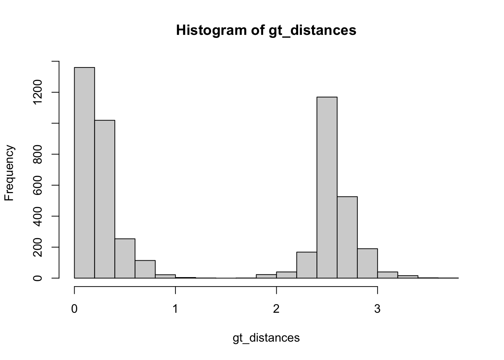

Chapter 11 Gene tree vs Species tree
11.1 Learning goals:
- Definition of coalescence
- Wright-Fisher population dynamics
- trace ancestry back in time
- common patterns of coalescence
- probability of deep coalescence
11.2 Tracing ancestry within one population
Here we develop a code to sample ancestors of each generation back in time within a haploid population of a fixed population size.
ancestryTrace<-function(n=10,generation =10){
# n indicates the population size
# leaf matrix: child lineage
leafMat<-matrix(1:(n),generation,n,byrow=T)
# parental nodes in the previous generation
parentMat<-matrix(0,generation,n)
# randomly sample a parent for each child (leaf node)
parentMat[,]<-ceiling(runif(n*generation,0,n))
for (g in seq(generation,1,-1)){
# reordering the labels of the parents per generation
# and all the generations afterwards for parents and children
# to make the graph look pretty
newOrder<-order(parentMat[g,])
parentMat[1:g,]<-parentMat[1:g,newOrder]
leafMat[1:g,]<-leafMat[1:g,newOrder]
#relabeling
oriLabel<-leafMat[g,]
newLabel<-(1:n)
leafMat[g,]<-newLabel
if(g>1){
for(j in 1:n){
parentMat[g-1,j]<-newLabel[oriLabel==parentMat[g-1,j]]
}
}
}
# ouput a table record all the linking patterns between a
# child node and a parental node
outDat<-c()
for (g in 1:generation){
for (i in 1:n){
outDat<-rbind(outDat,c(g,i,i,g-1))
outDat<-rbind(outDat,c(g,i,parentMat[g,i],g))
}
}
colnames(outDat)<-c("generation","ind","x","y")
# return the list of linking patterns, and the parent list
return(list(as.data.frame(outDat),parentMat))
}# getting as divergent color as possible for the individuals
color = grDevices::colors()[grep('gr(a|e)y', grDevices::colors(), invert = T)]
# function to paint the color pattern nodes
# each node will be colored according to its ancestor at g generations back
getColorPattern<-function(n=10,generation = 10, ancestorMat){
# initiate a matrix of color
colPat<-matrix("white",generation+1,n)
# sample the color for the ancestors
colPat[generation+1,]<-sample(color,n)
# for each generation forward, the color of the node correspond to its
#parental node's color in the previous generation
for (g in seq(generation,1,-1)){
colPat[g,]<-colPat[g+1,][ancestorMat[g,]]
}
#convert matrix to a tabular format
outpoints<-c()
for (g in 0:generation){
for (i in 1:n){
outpoints<-rbind(outpoints,c(i,g,colPat[g+1,i]))
}
}
colnames(outpoints)<-c("x","y","color")
return(as.data.frame(outpoints))
}11.2.1 Vary pop size and generation
let’s first explore the scenario of a pop size of 10 individuals tracing back 10 generations
# n represents population size,
# g represents the number of generations we trace back in time
n = 10
g = 10
ancTree<-ancestryTrace(n=n, generation=g)
treeEdges <- ancTree[[1]]
parentMatrix <- ancTree[[2]]
colPat<-getColorPattern(n=n, generation =g, parentMatrix)
# Let's plot how this tracing of ancestors look
# first plot all the individuals
plot(colPat[,1:2],pch=21,col="black",
cex=3,xlab="ind",ylab="generations back in time")
# plot connecting lines between parent and child
for (k in 1:g){
for (i in 1:n){
lines(treeEdges[(treeEdges$generation==k)&(treeEdges$ind==i),3:4],
lty=1)
}
}# add color to the plot
plot(colPat[,1:2],pch=21,col="black",
bg = colPat[,3],
cex=3,xlab="ind",ylab="generations back in time")
# plot connecting lines between parent and child
for (k in 1:g){
for (i in 1:n){
lines(treeEdges[(treeEdges$generation==k)&(treeEdges$ind==i),3:4]
,lty=1,
col=colPat[(colPat$x==i)&(colPat$y==(k-1)),3])
}
}11.3 Speciation and coalescence
Here we develop a two species evolutionary model that track the full population history of both species that diverged T generations ago.
## coalescence of individuals from two species, which diverged T generations ago
coal2sp<-function(n1=10,n2=10, generation = 10,divergence =5){
if(generation<divergence){
return()
}
# n indicates the population size
n = n1 + n2
# leaf matrix: child lineage
leafMat<-matrix(1:(n),generation,n,byrow=T)
# parental nodes in the previous generation
parentMat<-matrix(0,generation,n)
# randomly sample a parent for each child (leaf node)
parentMat[1:divergence,1:n1]<-ceiling(runif(n1*divergence,0,n1))
parentMat[1:divergence,(n1+1):n]<-ceiling(runif(n2*divergence,n1,n))
parentMat[(divergence+1):generation,1:n]<-ceiling(runif(n*(generation-divergence),0,n))
for (g in seq(generation,divergence+1,-1)){
# reordering the labels of the parents per generation
# and all the generations afterwards for parents and children
# to make the graph look pretty
newOrder<-order(parentMat[g,])
parentMat[(divergence+1):g,]<-parentMat[(divergence+1):g,newOrder]
leafMat[(divergence+1):g,]<-leafMat[(divergence+1):g,newOrder]
#relabeling
oriLabel<-leafMat[g,]
newLabel<-(1:n)
leafMat[g,]<-newLabel
if(g>(divergence+1)){
for(j in 1:n){
parentMat[g-1,j]<-newLabel[oriLabel==parentMat[g-1,j]]
}
}
}
popIndex<-list(1:n1,(n1+1):n)
for (g in seq(divergence+1,1,-1)){
for (i in 1:length(popIndex)){
# reordering the labels of the parents per generation
# and all the generations afterwards for parents and children
# to make the graph look pretty
newOrder<-order(parentMat[g,popIndex[[i]]])
parentMat[1:g,popIndex[[i]]]<-parentMat[1:g,newOrder+min(popIndex[[i]])-1]
leafMat[1:g,popIndex[[i]]]<-leafMat[1:g,newOrder+min(popIndex[[i]])-1]
#relabeling
oriLabel<-leafMat[g,popIndex[[i]]]
newLabel<-popIndex[[i]]
leafMat[g,popIndex[[i]]]<-newLabel
if(g>1){
for(j in popIndex[[i]]){
parentMat[g-1,j]<-newLabel[oriLabel==parentMat[g-1,j]]
}
}
}
}
# ouput a table record all the linking patterns between a
# child node and a parental node
outDat<-c()
for (g in 1:generation){
for (i in 1:n){
outDat<-rbind(outDat,c(g,i,i,g-1))
outDat<-rbind(outDat,c(g,i,parentMat[g,i],g))
}
}
colnames(outDat)<-c("generation","ind","x","y")
# return the list of linking patterns, and the parent list
return(list(as.data.frame(outDat),parentMat))
}11.3.1 Two-species coalescent history
#number of individuals in SpeciesA
n1 = 10
#number of individuals in SpeciesB
n2 = 10
#Total generation
g = 10
#Divergence time (divergence time needs to be shorter than the total generation)
d = 5
ancTree<-coal2sp(n1,n2,g,d)
treeEdges <- ancTree[[1]]
parentMatrix <- ancTree[[2]]
colPat<-getColorPattern(n1+n2,g,parentMatrix)
# plot the genealogy of individuals from two species
plot(colPat[,1:2],pch=21,col="black",
bg=colPat$color,cex=3,xlab="",
ylab="generations back in time",
xaxt = "n")
segments(n1+0.5, 0-0.5, n1+0.5, d+0.5,lty=1,cex=4)
abline(h = d+0.5,lty=2)
text(-0.5,d+0.5,"Div T", xpd=NA)
text(c(n1/2,(n1+2+n1+n2)/2),y=-1,labels=c("Species A", "Species B"), xpd=NA)
for (k in 1:g){
for (i in 1:(n1+n2)){
lines(treeEdges[(treeEdges$generation==k)&(treeEdges$ind==i),3:4]
,lty=1,col=colPat[(colPat$x==i)&(colPat$y==(k-1)),3])
}
}11.4 Exercise I
Using the one population coalescence model to answer the following questions:
- run one instance of the model: when the pop size (n) is 10, and the generation time (g) is 10, how many ancestors still have child lineages at generation 5? how many ancestors still have child lineages at generation 10 back in time?
- run 10 iterations of the code above. out of these replicates, how
many ancestors still have child lineages at generation 5 and 10 back
in time? what can you conclude from this observation: do populations
tend to coalesce faster in earlier generations or later generations?
and why? [Hint: use
length(unique(colPat[colPat$y==0, 3]))to get the number of ancestors at the last generation back in time]
vary the population sizes run the code and explore the coalescence patterns of larger or smaller pop sizes, longer or short generations. Question: do populations coalesce faster with larger population sizes or smaller population sizes? do populations coalesce faster in earlier generations or later generations?
bonus: write a for-loop for 1000 iterations, and calculate the average number of generations it takes for all the current individuals (n=10) to find a common ancestor (the remaining number of ancestors = 1).
Hint: set g to a very large number, e.g., 200, and call
ancTree<-ancestryTrace(n=10,g=200); parentMatrix <- ancTree[[2]], then
for (gv in 1:200) {
colPat<-getColorPattern(n,gv,parentMatrix)
#remaining # of ancestors
remAnc <- length(unique(colPat[colPat$y==0, 3]))
if (remAnc == 1) {
### we got the generation when all individuals find one common ancestor
T_tot = gv
### stop the for-loop
break
}
}repeat the above process 1000 times, and store T_tot in a vector, report the average of T_tot.
- Use the two-population coalescence model to answer the following
question: vary the divergence time (d) and run the following three scenarios:
- d=5, g=15; b) d=10, g=20; c) d=20, g=25. run 10 iterations of the code and calculate the probability that two species still have multiple ancestors at the last generation back in time. What can you conclude from the results?
11.6 Effects of Incomplete Lineage Sorting (ILS) alone
11.6.1 generate species tree with no extinction
## speciation rate
lambda<-1.0
## death rate
mu<-0
## number of replications
numb_replicates<-1
## number of current species
numb_extant_tips<-4
sptree_no_extinction <- sim_stBD(sbr = lambda,
sdr = mu,
numbsim = numb_replicates,
n_tips = numb_extant_tips)
# inspect the tree
par(mfcol = c(1, 1))
plot(sptree_no_extinction[[1]])11.6.2 simulate gene trees using the multispecies coalescent process
Let’s inspect the probability of ILS given different theta values. Theta is the product of population size and mutation rate per generation. If we are considering a diploid population with sexual reproduction, \[\theta = 4 N_e \mu\] If the population we are simulation is a haploid population with asexual reproduction, \[\theta = 2 N_e \mu\] where \(N_e\) is the effective population size, and \(\mu\) is the mutation rate of the genes per generation.
theta<-0.1
#number of genes to simulate
n_gene<-100
#number of individuals sampled per species
n_ind<-1
gtree_coal_only_1<- sim_msc(sptree_no_extinction[[1]],
ne = theta,
num_sampled_individuals = n_ind,
num_genes=n_gene,
rescale = F)
par(mfcol = c(1, 3))
plot(gtree_coal_only_1[[1]]$gene.trees[[1]])
plot(gtree_coal_only_1[[1]]$gene.trees[[2]])
plot(gtree_coal_only_1[[1]]$gene.trees[[3]])## repeat the analysis with a larger theta value
theta<-0.5
gtree_coal_only_2<- sim_msc(sptree_no_extinction[[1]],
ne = theta,
num_sampled_individuals = n_ind,
num_genes=n_gene,
rescale = F)
par(mfcol = c(1, 3))
plot(gtree_coal_only_2[[1]]$gene.trees[[1]])
plot(gtree_coal_only_2[[1]]$gene.trees[[2]])
plot(gtree_coal_only_2[[1]]$gene.trees[[3]])## repeat the analysis with a larger theta value
theta<-1
gtree_coal_only_3<- sim_msc(sptree_no_extinction[[1]],
ne = theta,
num_sampled_individuals = n_ind,
num_genes=n_gene,
rescale = F)
par(mfcol = c(1, 3))
plot(gtree_coal_only_3[[1]]$gene.trees[[5]],cex=2)
plot(gtree_coal_only_3[[1]]$gene.trees[[6]],cex=2)
plot(gtree_coal_only_3[[1]]$gene.trees[[7]],cex=2)## how does the cloud of gene trees look like
genetree_list_1<-gtree_coal_only_1[[1]]$gene.trees
class(genetree_list_1)<-"multiPhylo"
genetree_list_2<-gtree_coal_only_2[[1]]$gene.trees
class(genetree_list_2)<-"multiPhylo"
genetree_list_3<-gtree_coal_only_3[[1]]$gene.trees
class(genetree_list_3)<-"multiPhylo"
# define a plotting area with one row and three columns of subfigures.
par(mfcol = c(1, 3))
## densiTree overlay individual tree on top of each other
densiTree(genetree_list_1,type="cladogram",col="red",
alpha=0.2,scaleX=F)
mtext(text = "theta = 0.1")
densiTree(genetree_list_2,type="cladogram",col="blue",
alpha=0.2,scaleX=F)
mtext(text = "theta = 0.5")
densiTree(genetree_list_3,type="cladogram",col="orange",
alpha=0.2,scaleX=F)
mtext(text = "theta = 1")11.7 Calculate tree distances
11.7.1 RF distances
The Robinson-Foulds (RF) distance is a commonly used metrics for comparing phylogenetic trees. As we introduced in the lectures, RF counts the number of incompatible splits between two phylogenetic trees. The original RF distance only considers topological differences, while wRF.dist calculates the weighted RF distance.
# consider topology alone
RF.dist(genetree_list_1[[1]],genetree_list_1[[2]])
# consider both topoly and branch lengths, and store the output to a variable
gt_distances<-wRF.dist(genetree_list_3[[1]],genetree_list_3[[2]])11.7.2 Inspect pairwise RF distances among all the gene trees generated under one guiding species tree
# write a for-loop to calculate the mean topological differences between
# different gene trees
gt_distances<-c()
for(i in 1:(n_gene-1)){
for (j in (i+1):n_gene){
# calculate one pairwise distance between
# genetree i and genetree j
tempDist<-wRF.dist(genetree_list_1[[i]],genetree_list_1[[j]])
# store tempDist value into a vector
gt_distances<-c(gt_distances,tempDist)
}
}
## plot the histogram of the calculated gt_distances
hist(gt_distances)
## display the densitree along with the distribution of their RF distances
par(mfcol = c(1, 2))
densiTree(genetree_list_1,type="cladogram",col="orange",
alpha=0.2,scaleX=F)
hist(gt_distances)# repeat the analysis for all the theta values explored. What can you conclude?11.8 Inspect node support (i.e., subtrees defined by a split)
We would like to know whether the topology of simulated gene trees align with the underlying species tree. If not, which node/branch has the lowest support from the gene trees due to ILS.
First we need to relabel the species tree so that their names match with the gene tree labels, because species tree is labelled as “H_1, H_2…” while gene tree has the species label as well as individual ID: “1_1, 2_1…”.
sptree_no_extinction[[1]]$tip.label
genetree_list_1[[1]]$tip.label
trueSpTree <- sptree_no_extinction[[1]]
trueSpTree$tip.label <- genetree_list_1[[1]]$tip.labelWe then use the trueSpTree as the focal tree of interest, and the set of gene trees as comparisons to the focal tree to calculate node support values. Let’s inspect the gene trees generated under \(\theta = 0.1\) first.
par(mfcol = c(1, 3))
plotBS(trueSpTree, BStrees=genetree_list_1, type = "phylogram", bs.col="red",
bs.adj = c(0.1,0),cex=2)
mtext(text = "theta = 0.1")
plotBS(trueSpTree, BStrees=genetree_list_2, type = "phylogram", bs.col="red",
bs.adj = c(0.1,0),cex=2)
mtext(text = "theta = 0.5")
plotBS(trueSpTree, BStrees=genetree_list_3, type = "phylogram", bs.col="red",
bs.adj = c(0.1,0),cex=2)
mtext(text = "theta = 1")In this example, we see that node support of the two splits: (4,3) and (2,1) decreases as theta value increases. Here we only simulated four taxa, the errors are balanced for the two internal branches. If we simulate more taxa, we would see the node support changes as a function of internal branch lengths (intervals between speciation events).
## speciation rate
lambda<-1.0
## death rate
mu<-0
## number of replications
numb_replicates<-1
## number of current species
numb_extant_tips<-10
sptree_20 <- sim_stBD(sbr = lambda,
sdr = mu,
numbsim = numb_replicates,
n_tips = numb_extant_tips)
# inspect the tree
par(mfcol = c(1, 1))
plot(sptree_20[[1]])# generate 1000 gene trees
theta<-1
n_gene<-1000
n_ind<-1
gtree_coal_20<- sim_msc(sptree_20[[1]],
ne = theta,
num_sampled_individuals = n_ind,
num_genes=n_gene,
rescale = F)
# save the gene tree as a MultiPhylo class object
genetree_list_20<-gtree_coal_20[[1]]$gene.trees
class(genetree_list_20)<-"multiPhylo"
# inspect one tree
plot(genetree_list_20[[5]],cex=1)trueSpTree <- sptree_20[[1]]
trueSpTree$tip.label <- genetree_list_20[[1]]$tip.label
plotBS(trueSpTree, BStrees=genetree_list_20, type = "phylogram", bs.col="red",
cex=1)
mtext(text = paste("theta =",theta))11.9 Combined effects of gene duplication, loss and horizontal gene transfer events
sim_ltBD simulates a locus evolutionary history with potential duplication, loss, and honrizontal transfer events of genes based on the rate we specify.
# e.g., 1 gene birth event per 1 length of branch
gene_birth_rate<-0.1
# gene loss rate
gene_loss_rate<-0.05
# horizontal gene transfer rate
hgt_rate<-0.05
locus_tree<-sim_ltBD(sptree_no_extinction[[1]],
gbr = gene_birth_rate,
gdr = gene_loss_rate,
lgtr = hgt_rate,
num_loci = 10
)
## explore the locus tree shape with changes to gene_birth_rate, loss rate, and hgt rate11.10 Exercise II
- generate a species tree with 5 extant species, speciation rate equals 2, and extinction rate of 0.4
- generate 200 gene trees, varying the theta values: 0.01, 0.1,0.5, 1
- calculate RF, and wRF distances between the gene trees
- plot densitrees of gene trees with different theta values.
- which theta values had the highest RF or wRF values, and why?
- which splits (the subtree defined by the branch, i.e., node support) had the highest number of ILS (therefore, lowest node support), and why?
- generate a locus tree using the previous species tree with only positive gene_birth_rate 1.0, or hgt_rate 0.2, with 10 iterations
- plot all the 10 iterations of the locus trees
- pick one locus tree which contains gene duplication events, label branches of the orthologous genes with the same color. E.g., all gene 1 with color “red”, and all gene 2 with color “blue”
- plot the trees of the original gene and the duplicated gene separately, so the two subtrees contain only orthologous copies.